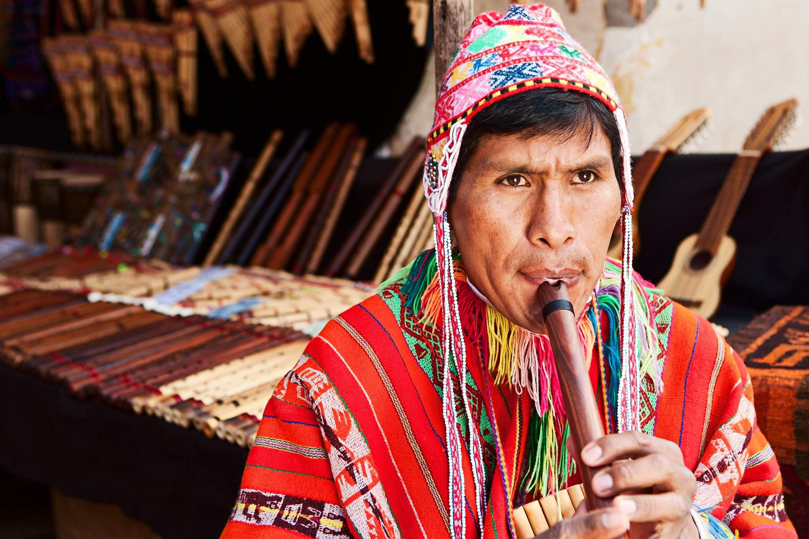
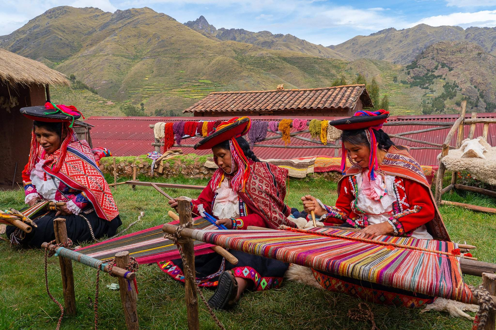

магазин кечуанских чульо
Чульо – это не только часть традиционного костюма кечуанов и аймаров, но и церемониальный головной убор андского священнослужителя Перу – пако. В Боливии священнослужители высшего ранга используют другой церемониальный убор – шапку с четырьмя углами, или чуку. Они надевают его поверх чульо.
Состав узорной композиции чульо для пако выверяется с особой тщательностью. Ведь каждая фигура на нем – это религиозный символ. Несомненно, что не только узоры чульо, но и его конструкция и, в частности, труба и наушники наделены символическим значением.

Эти вязаные шапки из шерсти альпаки или овцы использовались жителями горных регионов Перу. Их отличительными особенностями является уникальная форма, позволяющая плотно облегать голову, и пришитые снизу полукруглые наушники, защищающие уши и лицо даже при сильных ветрах. В верхней части шапки может иметься небольшой помпон, кисточка или вязанный хвост, длина которого варьируется.
Прикрывающие уши лоскуты чаще всего оканчиваются завязками, заплетенными в косы, но могут также иметь и помпоны или не иметь завязок вовсе. Современные чульо часто бывают двухслойными и могут использоваться на каждой из сторон, имеющих диаметрально разные или схожие расцветки. Также иногда они имеют подкладку из флиса или (реже) из меха. Еще одна отличительная особенность перуанских чульо - наличие орнамента.

История появления чульо доподлинно неизвестна, но изображения людей в этих головных уборах встречаются на керамике и камнях цивилизаций, живших задолго до инков. Традиционно чульо вязали только мужчины, но носили при этом лица обоих полов. На острове Такиле, что на озере Титикака, даже существует интересный обычай. С помощью этой шапки представительницы народности аймара, составляющей значительную часть населения острова, выбирают себе мужей.